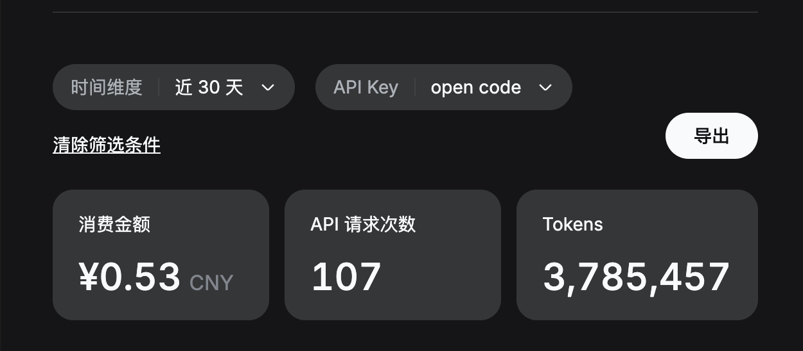
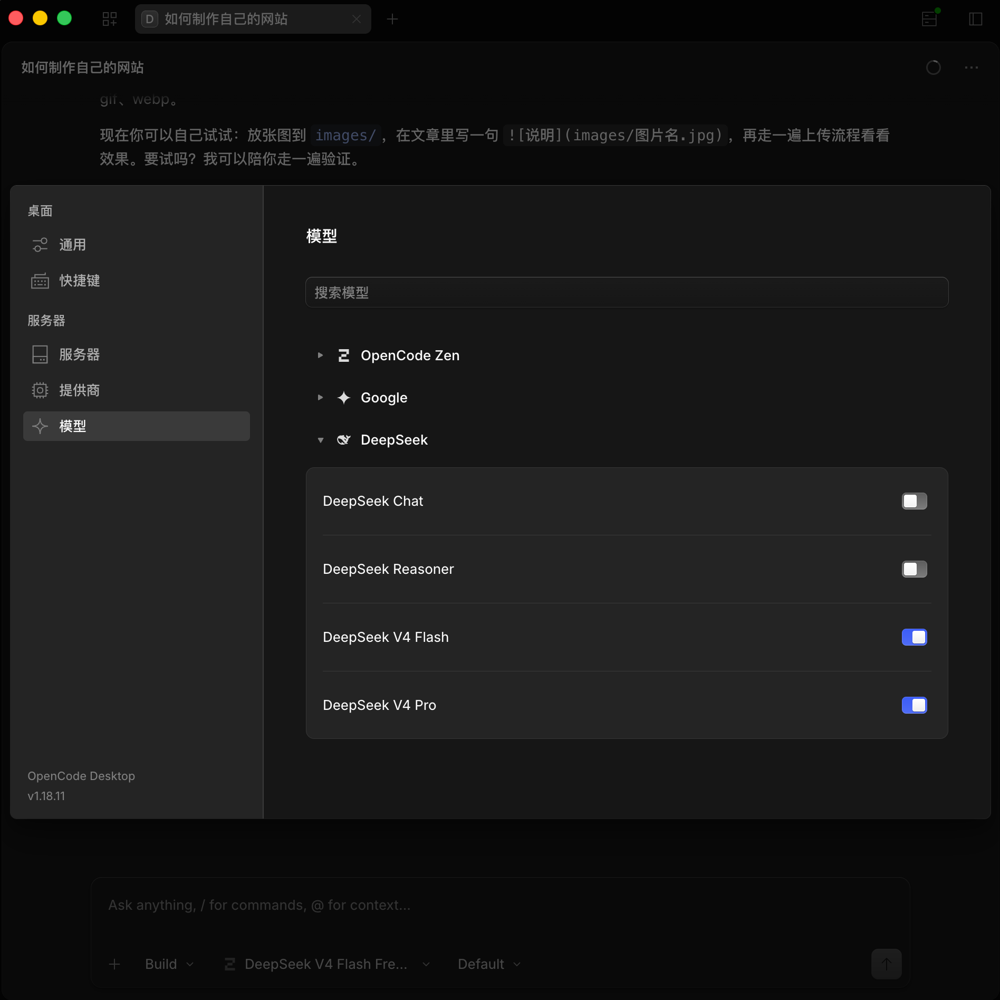

1 DeepSeek开放平台内
1.输入DeepSeek开放平台的网址，DeepSeek开放平台
2.在左侧栏的API keys中创建一个新的key。
3.可以在用量信息中看到自己所消耗的token

2 在open code app内
1.在设置栏-提供商中找到deepseek，然后输入之前的key即可
2.服务商内可以选择自己所需要的模型

1.输入DeepSeek开放平台的网址，DeepSeek开放平台
2.在左侧栏的API keys中创建一个新的key。
3.可以在用量信息中看到自己所消耗的token

1.在设置栏-提供商中找到deepseek，然后输入之前的key即可
2.服务商内可以选择自己所需要的模型
